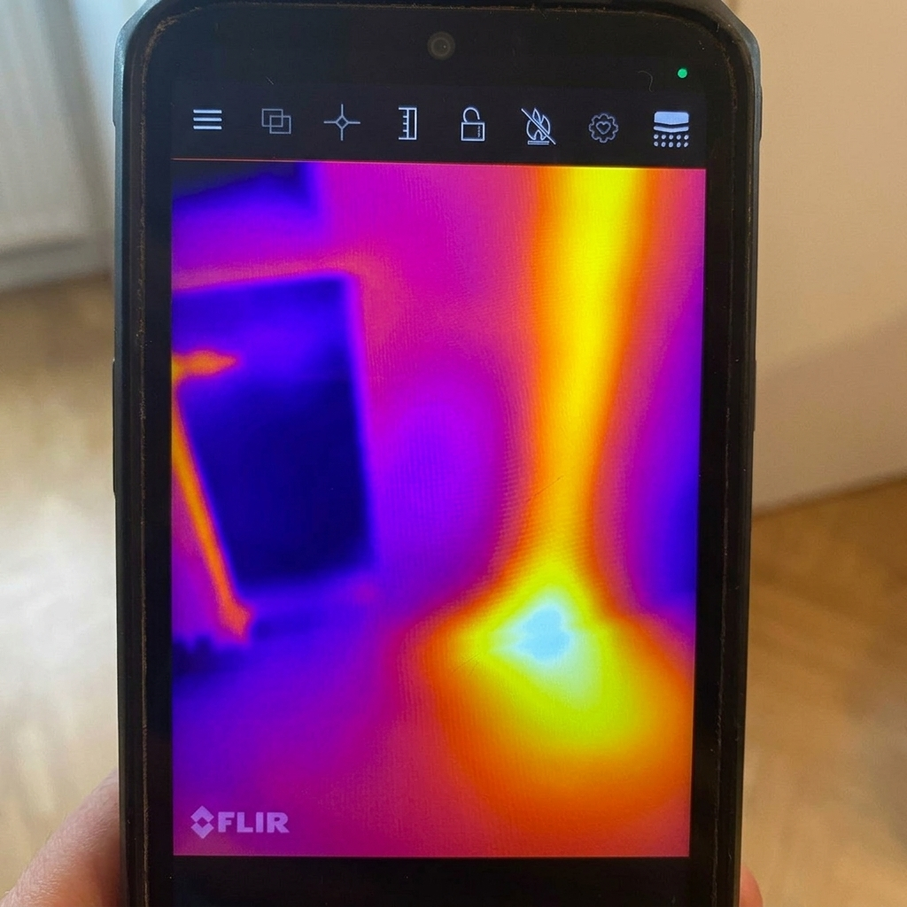
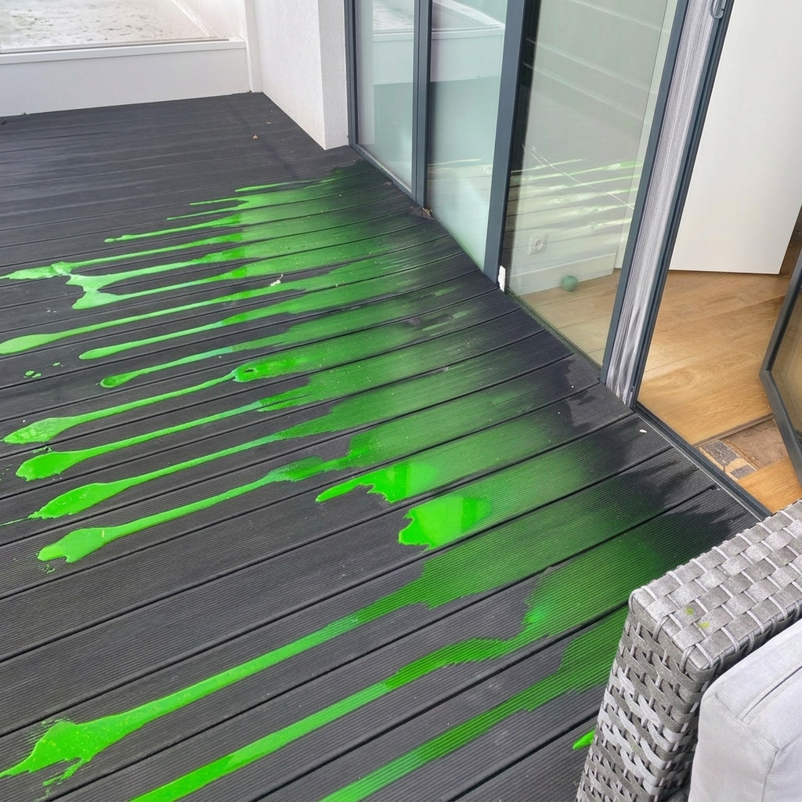

Nasze Usługi
Precyzyjna diagnostyka i lokalizacja wycieków wody przy użyciu najnowocześniejszych technologii.
Lokalizacja wycieków z rur
Wykorzystujemy metody akustyczne i gaz znacznikowy, aby precyzyjnie wskazać miejsce uszkodzenia rur wodnych i grzewczych ukrytych w ścianach i podłogach. Dzięki temu unikasz niepotrzebnego kucia całej łazienki czy kuchni.
Nasi specjaliści posiadają certyfikowane urządzenia do wykrywania nieszczelności w instalacjach z miedzi, PEX, PP i stali.
- Instalacje zimnej i ciepłej wody (Z.W. / C.W.U.)
- Piony kanalizacyjne i rury odpływowe
- Instalacje centralnego ogrzewania (C.O.)

Ogrzewanie podłogowe
Awarie ogrzewania podłogowego są szczególnie trudne do zlokalizowania bez specjalistycznego sprzętu. Używamy kamer termowizyjnych o wysokiej rozdzielczości, aby "zobaczyć" przebieg rur pod posadzką i zidentyfikować punktowy wyciek.
Metoda ta pozwala na precyzyjne wskazanie miejsca awarii, co ogranicza naprawę do wymiany zaledwie jednej płytki czy niewielkiego fragmentu paneli.

Dachy i tarasy
Wycieki na dachach płaskich i tarasach często objawiają się w zupełnie innym miejscu, niż znajduje się źródło problemu. Stosujemy metody dymowe i wilgotnościowe, aby znaleźć nieszczelność w hydroizolacji.
Dokładna analiza pozwala uniknąć kosztownej wymiany całego pokrycia dachowego, skupiając się jedynie na nieszczelnym punkcie.
